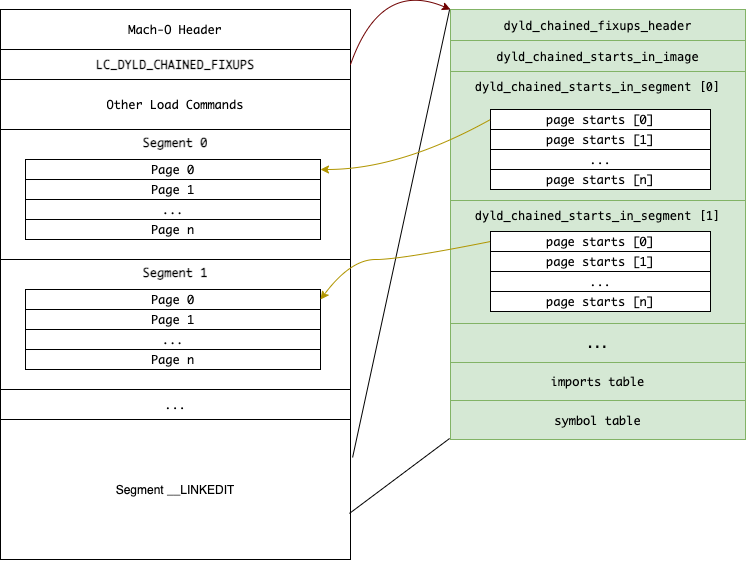
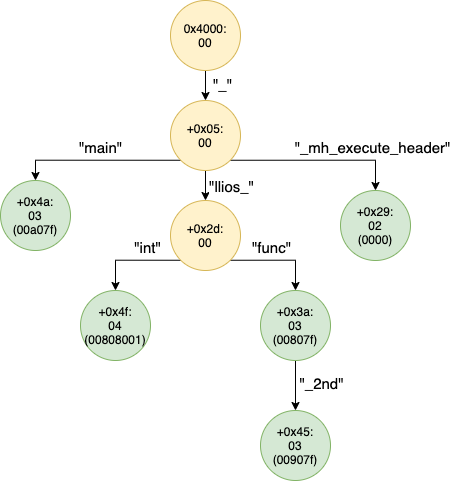
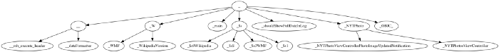

LC_DYLD_CHAINED_FIXUPS
dyld中的load commandLC_DYLD_CHAINED_FIXUPS（和LC_DYLD_EXPORTS_TRIE）- iOS 13中就新增了这个
load command，但是没广泛使用 - 到了iOS 15，iOS的app编译期间加了参数
-fixup_chains，则就会用上这套新的机制- 导致
- 旧的
class-dump失效了
- 旧的
- 变化
LC_DYLD_INFO(_ONLY)没了，被替代为LC_DYLD_CHAINED_FIXUPS和LC_DYLD_EXPORTS_TRIE
- 导致
- 包含内容
rebase-- addresses that need to be shifted by ASLRbind-- non-lazy bind symbols that are bound at launch timelazy bind-- lazy bind symbols that are bound at the first time of usageexport-- exported symbols that are provided by this binary
- 布局layout
- 
- 导出的Trie
- 举例
- 
- 
- 举例
- 对应定义
- 值的定义
#define LC_DYLD_EXPORTS_TRIE 0x80000033 // used with linkedit_data_command #define LC_DYLD_CHAINED_FIXUPS 0x80000034 // used with linkedit_data_command, payload is dyld_chained_fixups_header - 来源
- Apple开源源码：
- xnu
- https://github.com/apple-oss-distributions/xnu/archive/xnu-8792.61.2.tar.gz
EXTERNAL_HEADERS/mach-o/fixup-chains.hEXTERNAL_HEADERS/mach-o/loader.h
- https://github.com/apple-oss-distributions/xnu/archive/xnu-8792.61.2.tar.gz
- dyld
- https://github.com/apple-oss-distributions/dyld/archive/dyld-1042.1.tar.gz
include/mach-o/fixup-chains.h
- https://github.com/apple-oss-distributions/dyld/archive/dyld-1042.1.tar.gz
- xnu
- Apple开源源码：
- 值的定义
- iOS 13中就新增了这个
相关
binding绑定类型
- binding绑定
- 有3种
non-lazy bindinglazy bindingweak binding
- 有3种
新旧load command变化
% otool -l iOS14Example.app/iOS14Example | grep LC_DYLD
cmd LC_DYLD_INFO_ONLY
% otool -l iOS15Example.app/iOS15Example | grep LC_DYLD
cmd LC_DYLD_CHAINED_FIXUPS
cmd LC_DYLD_EXPORTS_TRIE
fixup-chains.h
/* -*- mode: C++; c-basic-offset: 4; tab-width: 4 -*-
*
* Copyright (c) 2018 Apple Inc. All rights reserved.
*
* @APPLE_LICENSE_HEADER_START@
*
* This file contains Original Code and/or Modifications of Original Code
* as defined in and that are subject to the Apple Public Source License
* Version 2.0 (the 'License'). You may not use this file except in
* compliance with the License. Please obtain a copy of the License at
* http://www.opensource.apple.com/apsl/ and read it before using this
* file.
*
* The Original Code and all software distributed under the License are
* distributed on an 'AS IS' basis, WITHOUT WARRANTY OF ANY KIND, EITHER
* EXPRESS OR IMPLIED, AND APPLE HEREBY DISCLAIMS ALL SUCH WARRANTIES,
* INCLUDING WITHOUT LIMITATION, ANY WARRANTIES OF MERCHANTABILITY,
* FITNESS FOR A PARTICULAR PURPOSE, QUIET ENJOYMENT OR NON-INFRINGEMENT.
* Please see the License for the specific language governing rights and
* limitations under the License.
*
* @APPLE_LICENSE_HEADER_END@
*/
#ifndef __MACH_O_FIXUP_CHAINS__
#define __MACH_O_FIXUP_CHAINS__ 6
#include <stdint.h>
//#define LC_DYLD_EXPORTS_TRIE 0x80000033 // used with linkedit_data_command
//#define LC_DYLD_CHAINED_FIXUPS 0x80000034 // used with linkedit_data_command, payload is dyld_chained_fixups_header
// header of the LC_DYLD_CHAINED_FIXUPS payload
struct dyld_chained_fixups_header
{
uint32_t fixups_version; // 0
uint32_t starts_offset; // offset of dyld_chained_starts_in_image in chain_data
uint32_t imports_offset; // offset of imports table in chain_data
uint32_t symbols_offset; // offset of symbol strings in chain_data
uint32_t imports_count; // number of imported symbol names
uint32_t imports_format; // DYLD_CHAINED_IMPORT*
uint32_t symbols_format; // 0 => uncompressed, 1 => zlib compressed
};
// This struct is embedded in LC_DYLD_CHAINED_FIXUPS payload
struct dyld_chained_starts_in_image
{
uint32_t seg_count;
uint32_t seg_info_offset[1]; // each entry is offset into this struct for that segment
// followed by pool of dyld_chain_starts_in_segment data
};
// This struct is embedded in dyld_chain_starts_in_image
// and passed down to the kernel for page-in linking
struct dyld_chained_starts_in_segment
{
uint32_t size; // size of this (amount kernel needs to copy)
uint16_t page_size; // 0x1000 or 0x4000
uint16_t pointer_format; // DYLD_CHAINED_PTR_*
uint64_t segment_offset; // offset in memory to start of segment
uint32_t max_valid_pointer; // for 32-bit OS, any value beyond this is not a pointer
uint16_t page_count; // how many pages are in array
uint16_t page_start[1]; // each entry is offset in each page of first element in chain
// or DYLD_CHAINED_PTR_START_NONE if no fixups on page
// uint16_t chain_starts[1]; // some 32-bit formats may require multiple starts per page.
// for those, if high bit is set in page_starts[], then it
// is index into chain_starts[] which is a list of starts
// the last of which has the high bit set
};
enum {
DYLD_CHAINED_PTR_START_NONE = 0xFFFF, // used in page_start[] to denote a page with no fixups
DYLD_CHAINED_PTR_START_MULTI = 0x8000, // used in page_start[] to denote a page which has multiple starts
DYLD_CHAINED_PTR_START_LAST = 0x8000, // used in chain_starts[] to denote last start in list for page
};
// This struct is embedded in __TEXT,__chain_starts section in firmware
struct dyld_chained_starts_offsets
{
uint32_t pointer_format; // DYLD_CHAINED_PTR_32_FIRMWARE
uint32_t starts_count; // number of starts in array
uint32_t chain_starts[1]; // array chain start offsets
};
// values for dyld_chained_starts_in_segment.pointer_format
enum {
DYLD_CHAINED_PTR_ARM64E = 1, // stride 8, unauth target is vmaddr
DYLD_CHAINED_PTR_64 = 2, // target is vmaddr
DYLD_CHAINED_PTR_32 = 3,
DYLD_CHAINED_PTR_32_CACHE = 4,
DYLD_CHAINED_PTR_32_FIRMWARE = 5,
DYLD_CHAINED_PTR_64_OFFSET = 6, // target is vm offset
DYLD_CHAINED_PTR_ARM64E_OFFSET = 7, // old name
DYLD_CHAINED_PTR_ARM64E_KERNEL = 7, // stride 4, unauth target is vm offset
DYLD_CHAINED_PTR_64_KERNEL_CACHE = 8,
DYLD_CHAINED_PTR_ARM64E_USERLAND = 9, // stride 8, unauth target is vm offset
DYLD_CHAINED_PTR_ARM64E_FIRMWARE = 10, // stride 4, unauth target is vmaddr
DYLD_CHAINED_PTR_X86_64_KERNEL_CACHE = 11, // stride 1, x86_64 kernel caches
DYLD_CHAINED_PTR_ARM64E_USERLAND24 = 12, // stride 8, unauth target is vm offset, 24-bit bind
};
// DYLD_CHAINED_PTR_ARM64E
struct dyld_chained_ptr_arm64e_rebase
{
uint64_t target : 43,
high8 : 8,
next : 11, // 4 or 8-byte stide
bind : 1, // == 0
auth : 1; // == 0
};
// DYLD_CHAINED_PTR_ARM64E
struct dyld_chained_ptr_arm64e_bind
{
uint64_t ordinal : 16,
zero : 16,
addend : 19, // +/-256K
next : 11, // 4 or 8-byte stide
bind : 1, // == 1
auth : 1; // == 0
};
// DYLD_CHAINED_PTR_ARM64E
struct dyld_chained_ptr_arm64e_auth_rebase
{
uint64_t target : 32, // runtimeOffset
diversity : 16,
addrDiv : 1,
key : 2,
next : 11, // 4 or 8-byte stide
bind : 1, // == 0
auth : 1; // == 1
};
// DYLD_CHAINED_PTR_ARM64E
struct dyld_chained_ptr_arm64e_auth_bind
{
uint64_t ordinal : 16,
zero : 16,
diversity : 16,
addrDiv : 1,
key : 2,
next : 11, // 4 or 8-byte stide
bind : 1, // == 1
auth : 1; // == 1
};
// DYLD_CHAINED_PTR_64/DYLD_CHAINED_PTR_64_OFFSET
struct dyld_chained_ptr_64_rebase
{
uint64_t target : 36, // 64GB max image size (DYLD_CHAINED_PTR_64 => vmAddr, DYLD_CHAINED_PTR_64_OFFSET => runtimeOffset)
high8 : 8, // top 8 bits set to this (DYLD_CHAINED_PTR_64 => after slide added, DYLD_CHAINED_PTR_64_OFFSET => before slide added)
reserved : 7, // all zeros
next : 12, // 4-byte stride
bind : 1; // == 0
};
// DYLD_CHAINED_PTR_ARM64E_USERLAND24
struct dyld_chained_ptr_arm64e_bind24
{
uint64_t ordinal : 24,
zero : 8,
addend : 19, // +/-256K
next : 11, // 8-byte stide
bind : 1, // == 1
auth : 1; // == 0
};
// DYLD_CHAINED_PTR_ARM64E_USERLAND24
struct dyld_chained_ptr_arm64e_auth_bind24
{
uint64_t ordinal : 24,
zero : 8,
diversity : 16,
addrDiv : 1,
key : 2,
next : 11, // 8-byte stide
bind : 1, // == 1
auth : 1; // == 1
};
// DYLD_CHAINED_PTR_64
struct dyld_chained_ptr_64_bind
{
uint64_t ordinal : 24,
addend : 8, // 0 thru 255
reserved : 19, // all zeros
next : 12, // 4-byte stride
bind : 1; // == 1
};
// DYLD_CHAINED_PTR_64_KERNEL_CACHE, DYLD_CHAINED_PTR_X86_64_KERNEL_CACHE
struct dyld_chained_ptr_64_kernel_cache_rebase
{
uint64_t target : 30, // basePointers[cacheLevel] + target
cacheLevel : 2, // what level of cache to bind to (indexes a mach_header array)
diversity : 16,
addrDiv : 1,
key : 2,
next : 12, // 1 or 4-byte stide
isAuth : 1; // 0 -> not authenticated. 1 -> authenticated
};
// DYLD_CHAINED_PTR_32
// Note: for DYLD_CHAINED_PTR_32 some non-pointer values are co-opted into the chain
// as out of range rebases. If an entry in the chain is > max_valid_pointer, then it
// is not a pointer. To restore the value, subtract off the bias, which is
// (64MB+max_valid_pointer)/2.
struct dyld_chained_ptr_32_rebase
{
uint32_t target : 26, // vmaddr, 64MB max image size
next : 5, // 4-byte stride
bind : 1; // == 0
};
// DYLD_CHAINED_PTR_32
struct dyld_chained_ptr_32_bind
{
uint32_t ordinal : 20,
addend : 6, // 0 thru 63
next : 5, // 4-byte stride
bind : 1; // == 1
};
// DYLD_CHAINED_PTR_32_CACHE
struct dyld_chained_ptr_32_cache_rebase
{
uint32_t target : 30, // 1GB max dyld cache TEXT and DATA
next : 2; // 4-byte stride
};
// DYLD_CHAINED_PTR_32_FIRMWARE
struct dyld_chained_ptr_32_firmware_rebase
{
uint32_t target : 26, // 64MB max firmware TEXT and DATA
next : 6; // 4-byte stride
};
// values for dyld_chained_fixups_header.imports_format
enum {
DYLD_CHAINED_IMPORT = 1,
DYLD_CHAINED_IMPORT_ADDEND = 2,
DYLD_CHAINED_IMPORT_ADDEND64 = 3,
};
// DYLD_CHAINED_IMPORT
struct dyld_chained_import
{
uint32_t lib_ordinal : 8,
weak_import : 1,
name_offset : 23;
};
// DYLD_CHAINED_IMPORT_ADDEND
struct dyld_chained_import_addend
{
uint32_t lib_ordinal : 8,
weak_import : 1,
name_offset : 23;
int32_t addend;
};
// DYLD_CHAINED_IMPORT_ADDEND64
struct dyld_chained_import_addend64
{
uint64_t lib_ordinal : 16,
weak_import : 1,
reserved : 15,
name_offset : 32;
uint64_t addend;
};
#endif // __MACH_O_FIXUP_CHAINS__